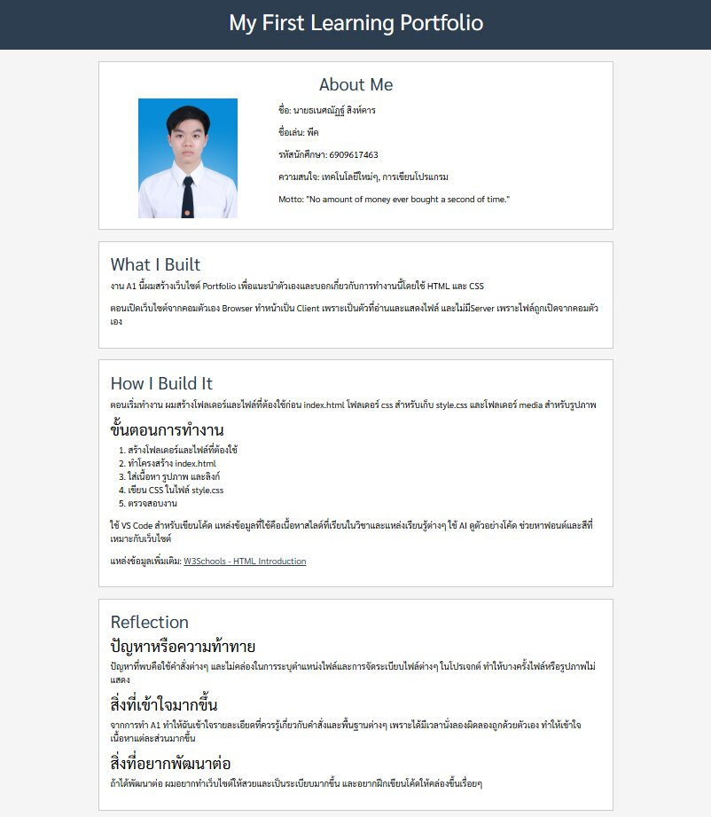

About Me
ชื่อ: นายธเนศณัฏฐ์ สิงห์คาร
ชื่อเล่น: พีค
รหัสนักศึกษา: 6909617463
ความสนใจ: เทคโนโลยีใหม่ๆ, การเขียนโปรแกรม
Motto: "No amount of money ever bought a second of time."
What I Built
งาน A1 นี้ผมสร้างเว็บไซต์ Portfolio เพื่อแนะนำตัวเองและบอกเกี่ยวกับการทำงานนี้โดยใช้ HTML และ CSS
ตอนเปิดเว็บไซต์จากคอมตัวเอง Browser ทำหน้าเป็น Client เพราะเป็นตัวที่อ่านและแสดงไฟล์ และไม่มีServer เพราะไฟล์ถูกเปิดจากคอมตัวเอง
How I Build It
ตอนเริ่มทำงาน ผมสร้างโฟลเดอร์และไฟล์ที่ต้องใช้ก่อน index.html โฟลเดอร์ css สำหรับเก็บ style.css และโฟลเดอร์ media สำหรับรูปภาพ
ขั้นตอนการทำงาน
- สร้างโฟลเดอร์และไฟล์ที่ต้องใช้
- ทำโครงสร้าง index.html
- ใส่เนื้อหา รูปภาพ และลิงก์
- เขียน CSS ในไฟล์ style.css
- ตรวจสอบงาน
ใช้ VS Code สำหรับเขียนโค้ด แหล่งข้อมูลที่ใช้คือเนื้อหาสไลด์ที่เรียนในวิชาและแหล่งเรียนรู้ต่างๆ ใช้ AI ดูตัวอย่างโค้ด ช่วยหาฟอนต์และสีที่เหมาะกับเว็บไซต์
แหล่งข้อมูลเพิ่มเติม: W3Schools - HTML Introduction
Reflection
ปัญหาหรือความท้าทาย
ปัญหาที่พบคือใช้คำสั่งต่างๆ และไม่คล่องในการระบุตำแหน่งไฟล์และการจัดระเบียบไฟล์ต่างๆ ในโปรเจกต์ ทำให้บางครั้งไฟล์หรือรูปภาพไม่แสดง
สิ่งที่เข้าใจมากขึ้น
จากการทำ A1 ทำให้ฉันเข้าใจรายละเอียดที่ควรรู้เกี่ยวกับคำสั่งและพื้นฐานต่างๆ เพราะได้มีเวลานั่งลองผิดลองถูกด้วยตัวเอง ทำให้เข้าใจเนื้อหาแต่ละส่วนมากขึ้น
สิ่งที่อยากพัฒนาต่อ
ถ้าได้พัฒนาต่อ ผมอยากทำเว็บไซต์ให้สวยและเป็นระเบียบมากขึ้น และอยากฝึกเขียนโค้ดให้คล่องขึ้นเรื่อยๆ
My Portfolio
CS100 A1: My First Learning Portfolio
ประเภท: Course Assignment
วันที่: 30 ส.ค. 2569
บทบาท: ทำเว็บไซต์
รายละเอียด: สร้างเว็บไซต์ Portfolio เพื่อแนะนำตัวเอง โดยใช้ HTML และ CSS
ทักษะ: HTML, CSS
Reflection
What I did: สร้างเว็บไซต์เพื่อแนะนำตัวเอง
What I learned: เรียนรู้พื้นฐาน HTML และ CSS
Challenge: ยังไม่คล่องเรื่องการใช้คำสั่งต่างๆ และพบปัญหาเรื่องตำแหน่งไฟล์และรูปภาพไม่แสดง ซึ่งผมแก้โดยเช็กชื่อไฟล์และโฟลเดอร์ให้ตรงกัน
Next step: ฝึกเขียนโค้ดและพัฒนาเว็บไซต์ให้ดีขึ้น
Evidence

CS102: Programming Assignments in C
ประเภท: Course Assignment
วันที่: 14 ก.ย. 2569
บทบาท: เขียนโปรแกรม
รายละเอียด: เขียนโปรแกรมภาษา C เพื่อแก้โจทย์
ทักษะ: C Programming
Reflection
What I did: เขียนโปรแกรมภาษา C
What I learned: ฝึกใช้เงื่อนไขต่างๆ ลูป และการคำนวณ
Challenge: ต้องพยายามทำความเข้าใจโจทย์และเลือกเงื่อนไขให้ถูกต้อง ซึ่งผมแยกว่าโจทย์ต้องการอะไรเป็นข้อๆ ก่อนเขียนโค้ด จากนั้นลองรันโปรแกรมด้วยค่าตัวอย่าง แล้วแก้เงื่อนไขให้เป็นไปตามโจทย์
Next step: ฝึกเขียนโปรแกรมเพื่อให้มีทักษะการแก้ปัญหา
Evidence
Download cs102Hw-2-1-6909617463.c
Download cs102Hw-2-2-6909617463.c
Download cs102Hw-2-3-6909617463.c